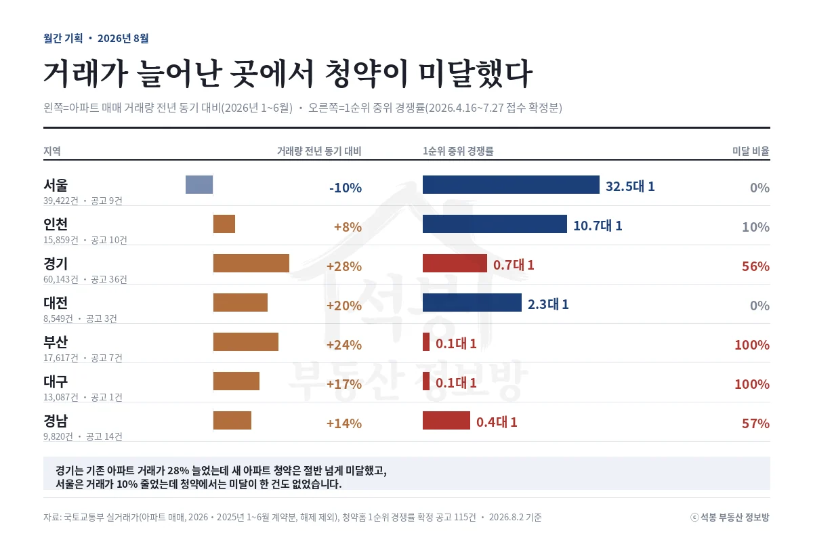
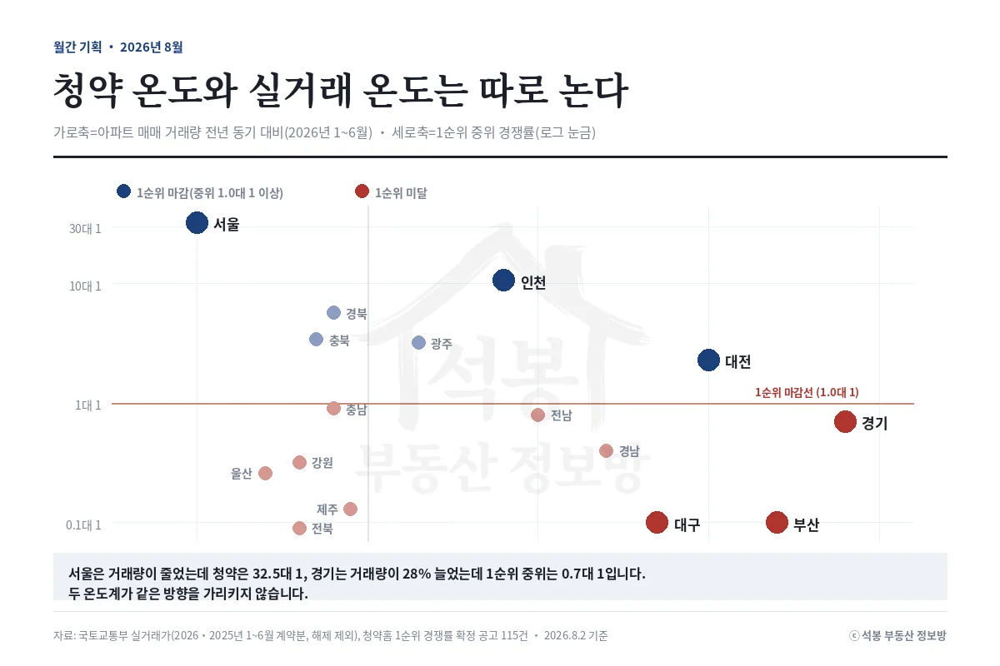
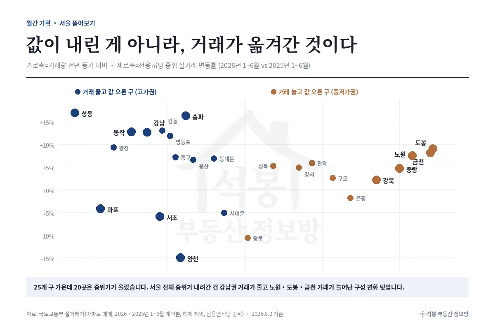

청약 경쟁률이 높으면 그 동네 집값도 뜨겁다고 여기기 쉽습니다. 올해 데이터를 맞춰보면 반대였습니다. 서울은 거래량이 10% 줄었는데 청약은 중위 32.5대 1, 경기는 거래량이 28% 늘었는데 0.7대 1이었습니다.
두 온도계를 나란히 놓으면

실거래 온도는 아파트 매매 거래량을 2026년 1~6월과 2025년 1~6월로 비교한 값입니다(해제 제외). 청약 온도는 1순위 경쟁률(1순위 접수 ÷ 일반공급 세대수, 2순위·특별공급 제외)이 확정된 공고 115건이고, 접수 시작일은 4월 16일에서 7월 27일 사이입니다. 두 구간이 완전히 겹치지는 않습니다.
지역
거래량 (2026년 1~6월)
전년 동기 대비
공고 수 (4.16~7.27 접수)
1순위 중위 경쟁률
미달 비율
서울
39,422건
-10%
9
32.5대 1
0%
인천
15,859건
+8%
10
10.7대 1
10%
경기
60,143건
+28%
36
0.7대 1
56%
대전
8,549건
+20%
3
2.3대 1
0%
부산
17,617건
+24%
7
0.1대 1
100%
대구
13,087건
+17%
1
0.1대 1
100%
경남
9,820건
+14%
14
0.4대 1
57%

규칙이 잘 보이지 않습니다. 거래가 가장 많이 늘어난 경기가 청약에서는 절반 넘게 미달이고, 거래가 유일하게 줄어든 서울은 미달이 한 건도 없습니다. 이유는 단순합니다. 기존 아파트는 값을 협상해서 팔리고, 분양가는 공고와 함께 고정됩니다. 저희 집계에서 지방 공고의 중위 갭은 +108%였습니다. 거래가 늘었다는 건 값이 맞으면 사겠다는 뜻이지, 두 배 가격의 새 아파트를 사겠다는 뜻이 아닙니다. 반대로 서울은 나오는 물량 자체가 적어서, 비싸도 통장이 몰립니다.
여기서부터는 회원에게 보여드립니다
카카오 로그인 3초면 전문을 읽을 수 있습니다. 무료입니다.
가입하시면 지역 시장조사 보고서(약식)를 2회 무료로 요청하실 수 있습니다.
이미 회원이면 같은 버튼으로 로그인만 됩니다
서울 중위가가 내려간 건 값이 내려서가 아니다

서울의 전용면적당 중위 실거래가는 상반기 1,284만원으로 1년 전보다 11.5% 낮습니다. 그런데 25개 구를 뜯어보면 20개 구에서 중위가가 올랐습니다.
전용㎡당 3,502만원짜리 강남 거래가 줄고 826만원짜리 도봉 거래가 늘면, 단지별로 값이 다 올라도 전체를 한 줄로 세운 중앙값은 내려갑니다. 서울 집값이 11% 빠진 게 아니라 거래의 무게중심이 옮겨간 겁니다. 시군구로 쪼개보지 않으면 정반대 문장이 나옵니다.
그래서 두 온도계를 어떻게 볼까
청약 경쟁률은 그 지역 수요의 온도계가 아니라 그 분양가에 대한 반응입니다. 경기의 0.7대 1은 경기 집을 아무도 안 산다는 뜻이 아닙니다. 같은 기간 기존 아파트 거래는 6만 건을 넘겼습니다. 거꾸로 실거래가 조용해도 청약은 뜨거울 수 있습니다. 서울이 그랬습니다. 그리고 지역 단위 통계는 구성 변화에 약합니다. 숫자 하나를 집기 전에 어느 지역, 어느 면적대, 어느 연식의 거래로 만들어진 값인지 보는 습관이 필요합니다. 다음 달에도 두 온도계를 맞춰보고 간격이 좁혀지는지 짚겠습니다.
원자료: 국토교통부 실거래가 공개시스템(아파트 매매, 2026년 및 2025년 1~6월 계약분, 해제 건 제외, 전용면적당 중위가), 청약홈 분양 공고·경쟁률(1순위 경쟁률이 확정된 공고 115건, 접수 시작일 2026년 4월 16일~7월 27일) · 2026년 7월 계약분은 신고 기한이 남아 있어 집계에서 제외 · 분석·제작: 석봉 부동산 정보방 · 본 자료는 정보 제공 목적이며 투자 권유가 아닙니다.